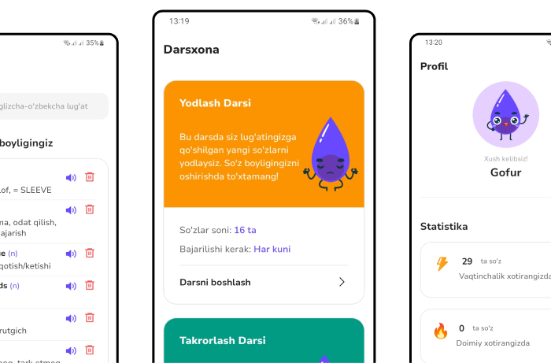

Lug'at Daftar Tutmasdan
Ko'proq so'zlarni yodlang va ularni uzoq muddatga eslab qoling
Hoziroq ilovani Play Store dan yuklab oling va so’z boyligingizni sifatli va samarali oshirishni boshlang!
Ilovani yuklab olish Bu sizga ayni kerakli ilova
Agar . . .
- Yangi so'zlarni lug'at daftaringizga tarjimasi bilan yozib chiqish ko'p vaqtingizni olib quyayotgan bo'lsa
- So'zlarning qanday talaffuz qilinishi yoki yozilishi esingizdan chiqib qolayotgan bo'lsa
- Yodlagan so'zlaringiz ma'lum vaqtdan so'ng butunlay esingizdan chiqib ketayotgan bo'lsa
- Siz judayam band odam bo'lsangiz va ishda, o'qishda, liftda, metroda va hakoza joylarda bo'sh vaqtingizdan unumli foydalanib yangi so'zlarni yodlashni yoki eskilarini takrorlab olishni xohlasangiz
- Aynan nechta so'z bilishingizni va so'z boyligingiz qay darajada o'sib borayotganini bilib borishni xohlasangiz
ilovamiz bilan nimalarga erisha olasiz?
Quyida ilovamiz qanday imkoniyatlarga ega ekanligini bilib olishingiz mumkin:
- Boshqalar yangi so'zlarni lug'at daftariga yozib bo'lgunicha siz ularni yodlab bo'lasiz.
- So'zlarning shunchaki tarjimasini emas balki, qanday yozilishi va qanday talaffuz qilinishini ham eslab qolasiz.
- Yodlagan har bir so'zingiz endi umuman esingizdan chiqib ketmaydi.
- So'zlarni yodlashga va ularni doim xotirangizda saqlab qolishingiz uchun minimal vaqt sarflaysiz, lekin maksimal natijaga erishasiz.
- Siz nechta so'z bilishigizni va so'z boyligingiz qay darajada o'sib borayotganini bilib borasiz.
- WordQ ilovasi ishda, o'qishda, metroda va istalgan joyda doim siz bilan
Bularning barchasi safsata bo'lsa kerak, to'g'rimi?
Yo'q albatta. Bunga ishonch hosil qilish uchun ilovamiz qanday ishlashini quyidagi 3 qadam orqali tushunib olsangiz bas.
- Ilova 20 000 so'zdan iborat inglizcha-o'zbekcha lug'atni o'z ichiga oladi. Lug'atdan biror so'zning tarjimasini ko'rishingiz bilan ilova o'sha so'zni avtomatik tarzda “Yodlash Darsi” ga qo'shadi va 4 xil intensiv mashqlar orqali so'zlarni tarjimasi, talaffuzi va yozilishi bilan tez va oson yodlashingizga yordam beradi.
- Yangi so'zlarni yodlab bo'lganingizdan so'ng ilova ularni avtomatik tarzda “Takrorlash Darsi” ga qo'shadi. Bu darsda har bir so'zni operativ (qisqa muddatli) xotirangizdan doimiy xotirangizga o'tkazish uchun "Oraliqli Takrorlash" usulidan foydalaniladi. Bunda so'zlarni 6 oy davomida (1-kuni, 2-kuni, 3-kuni, 6-kuni, 10-kuni, 18-kuni, 32-kuni, 57-kuni, 101-kuni va 180-kuni) 10 marta takrorlashingiz kerak bo'ladi va buni ilovaning o'zi nazorat qilib boradi.
- Bundan tashqari ilovamiz nechta so'zni o'z so'z boyligngizga qo'shdingiz va ularning nechtasi sizning operativ (qisqa muddatli) xotirangizda va nechtasi doimiy xotirangizda hisoblab boradi.
Xulosa qilib aytganda, WordQ ilovasi bir vaqtning o'zida siz uchun lug'at, lug'at daftar, darsxona va unumli yodlash tizimi vazifasini bajaradi va so'z boyligingizni oshirishda katta natijaga erishishingizga yordam beradi.
Ko'p beriladigan savollar
"Oraliqli Takrorlash" nima?
Oraliqli Takrorlash bu - biror ma'lumotni uzoqroq muddatga eslab qolishga yordam beradigan yodlash usuli. Bu usul yodlagan ma'lumotingizni shunchaki uni unitishni boshlashingizdan sal oldinroq takrorlashdan iborat. Bu usul bilan siz biror ma'lumotni yodlashda ancha vaqtingizni tejashingiz, lekin katta natija olishingiz mumkin. Buni quyidagi misol bilan yanada osonroq tushunib olishingiz mumkin.
Tasavvur qiling siz yerga urug' ekdingiz. Agar siz uni 1 marta sug'orib keyin u haqida butunlay unutsangiz, u qurub qoladi. Agar urug'ni tinmasdan sug'orsangiz ham u kasallanadi yoki nobud bo'ladi. Oraliqli Takrorlash bu - urug'ni doim, lekin faqat o'z vaqtida sug'orib turishdir, ya'ni siz yodlagan ma'lumotingiz xotirangizda yaxshi unib va ildizlab joylashib olishga yordam berishdir.
Ilova qaysi darajadagi o'rganuvchilar uchun mo'ljallangan?
Ilova asosan ingliz tili darajasi boshlang'ich (beginner) va o'rta (intermediate) bo'lgan o'quvchilar uchun mo'ljallangan, chunki bu ilova yordamida ular mukammal (advanced) darajaga tez va oson chiqa oladi. Lekin bu ilovadan mukammal (advanced) darajadagi o'quvchilar ham foydalanishi va yaxshi natijagalarga erishishlari mumkin.
So'zlarni doimiy xotiramga o'tkazish uchun ularni 10 marta takrorlashim yetarli bo'ladimi?
O'tkazilgan bir nechta tadqiqotlarga ko'ra, "Ha", shunday. Lekin bu minimal ko'rsatgich, ya'ni ko'pchilik so'zlar uchun ularni doimiy xotirangizga o'tkazish uchun "Oraliqli Takrorlash" orqali 10 marta takrorlash yetarli bo'ladi. Lekin ba'zi bir eslab qolish qiyinroq bo'lgan so'zlar 10 martadan ko'proq takrorlashni talab etadi. Shuning uchun ilovamiz agarda biror so'zni yaxshi eslab qolalmayotganingizni aniqlasa uni yaxshilab eslab qolmaganungizcha takrorlashlar sonini oshirib boraveradi.
Ilovada yodlash uchun tayyor qo'shilgan so'zlar ham bormi?
Albatta. Ilovadagi "Qo'shimcha Dars" da quyidagi mavzular bo'yicha yodlash uchun tayyor so'zlar to'plami kiritilgan va vaqt o'tishi bilan ular ko'paytirilib boriladi:
- Ingliz tilida eng ko'p ishlatiladigan so'zlar
- Ingliz tilida og'zaki nutqda eng ko'p ishlatiladigan so'zlar
- SAT uchun so'zlar
- IELTS uchun so'zlar
- TOEFL uchun so'zlar
Ilova ishlashi uchun internet kerakmi?
Ilovan ishlashi uchun hech qanday internet kerak emas. Shuning uchun undan istalgan joyda va istalgan vaqt bemalol foydalanishingiz mumkin.
QULAY TARIF REJALAR
Hoziroq ilovaning o'zingizga mos Premium obunasini sotib oling va jiddiy maqsadlaringiz sari jiddiy qadam tashlang.
100% Kafolat beramiz
Tavakkal qilishingiz shart emas, chunki biz mijozlarimiz xizmatlarimizdan 100% qoniqishiga doim ishonch hosil qilamiz. Shuning uchun agarda Premium obunani sotib olganingizdan so'ng 30 kun ichida Premium imkoniyatlar sizni qoniqtirmasa yoki fikringizni o'zgartirsangiz sizga hech qanday ortiqcha savollarsiz pulingizni 100% qaytarib beramiz.